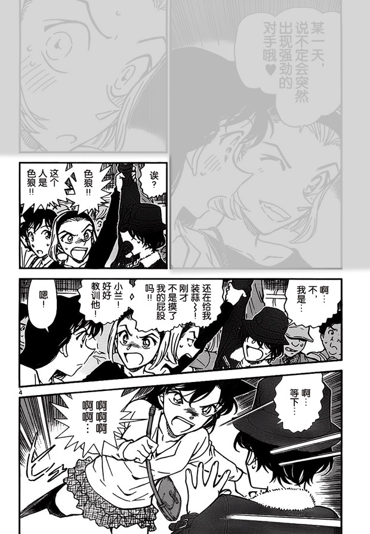
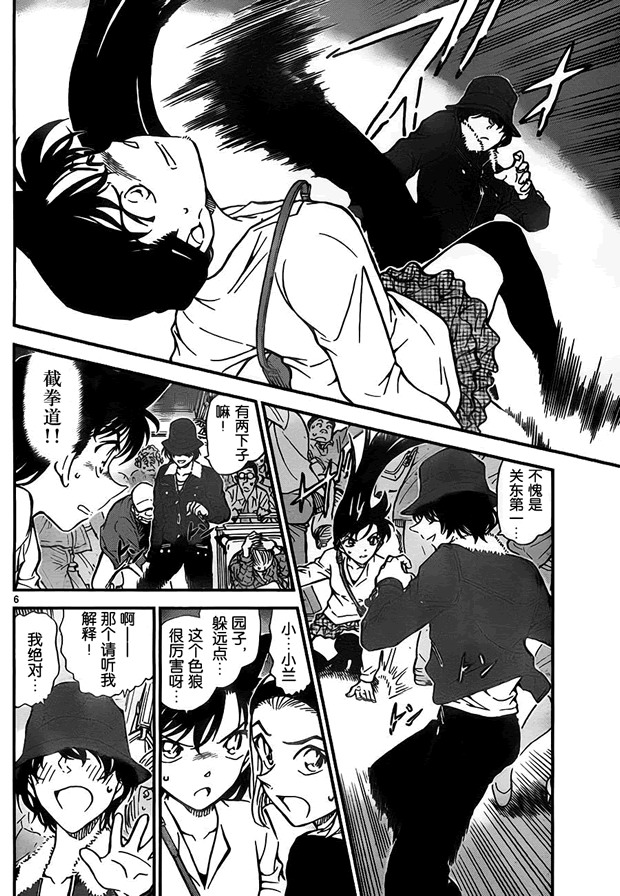
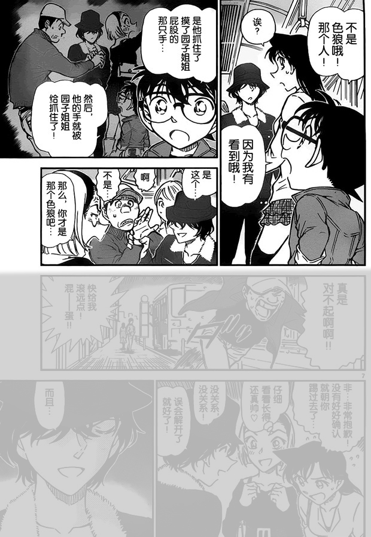

重新翻漫画看到的，第73卷世良真纯初登场的这一话。




可以看到，世良的右手一直死死抓着真正的犯人，但由于角度的原因一直没有看到全貌。不过有几格几乎半遮半掩地明示了真相。
我想说的是，青山在揭示柯南/新一的感情归属时，也用的是这种手法。
表面上看到的不一定是真相，而且真相已经全都给你了，就看读者用心不用心观察。
2024-03-31 18:48 | DEATHRUG1:惯用手被占用时也能把毛利逼退。嗯！B级之间也存在着差距！2024-04-01 03:36 | 🍭扭曲战神🌌:不会有男人对园子有兴趣的2024-04-02 08:08 | ☞坚硬如水☜:回复 DEATHRUG1 :扎心了

如何判断是不是最优秀的漫画家甚至说故事创作者（包括导演、作家等等），那就是他们都有最基本的原则“我明明白白的给出了，就看你们自己发没发现了”
小兰真的挺离谱的，没搞明白就随便打人。也不是后期才“崩”，前期也一样，她从窗户跳出去，踹开车窗，把“犯人”抓出来是蛮帅的，但要是那个是真的“犯人”就好了……
后来对猫哥也是，不问青红皂白就动手
后来对猫哥也是，不问青红皂白就动手
2024-03-31 18:45 | 贴吧用户_5RU666a:同，别的暴力女友人设也没这样的啊2024-04-15 16:11 | 梦梦-2017:赤木量子事件也是，直接脚踢开门，门后犯人重伤，柯南还腹诽该不会死了吧
楼主get到了刚子的用意。障眼法，或者说叙述性诡计，是推理作者常用的套路，但作品体裁的不同决定了不同作者会用不一样的诡计，例如小说作者可能会通过描述某人的行为来暗示这个房间有什么东西，而漫画家则有不同的思路。如果想要详细了解这一点可以去看去年青山刚昌和东野圭吾的对谈→→ 网页链接 ，他们之间有对这方面的讨论。尽管都属于叙述性诡计，但不同体裁作品因其写作方式不同，所衍生出的写作逻辑亦有区别。漫画因为都需要被画出来，所以不能像小说那样含蓄地描写，而需要用更能吸引读者视线的东西来制造盲点。这一话的刚子使用了更具有冲击力的打斗场面来吸引读者的眼球，从而掩盖了世良的右手。这向我们展示了刚子在运用叙诡时所采取的一般逻辑。
尽管我们都知道刚子已经明确说过自己“将恋爱和推理结合得很好”，但依然会有人因为他大肆描写和宣传新兰感情的行为而心生疑虑，我想这样的疑虑可以从刚子的叙诡逻辑里得到答案，他就是会制造冲击性更强、更夸张的故事来掩盖真相。另一个常见误区也可以证明这一点：事实上，兰的塑造和新兰感情线的描写是在哀登场以及准备登场的时候才开始的，所以“兰的人设跟不上时代”“兰被遗弃”“新兰是初心”等类似的观点是不对的，新兰从一开始，至少从转为长篇着手准备灰原哀登场开始，就是作为柯哀的掩护存在的。新兰不是主体，柯哀不是客体，而应当是反过来才对。以柯哀为本位进行分析，很多问题会有新思路。
尽管我们都知道刚子已经明确说过自己“将恋爱和推理结合得很好”，但依然会有人因为他大肆描写和宣传新兰感情的行为而心生疑虑，我想这样的疑虑可以从刚子的叙诡逻辑里得到答案，他就是会制造冲击性更强、更夸张的故事来掩盖真相。另一个常见误区也可以证明这一点：事实上，兰的塑造和新兰感情线的描写是在哀登场以及准备登场的时候才开始的，所以“兰的人设跟不上时代”“兰被遗弃”“新兰是初心”等类似的观点是不对的，新兰从一开始，至少从转为长篇着手准备灰原哀登场开始，就是作为柯哀的掩护存在的。新兰不是主体，柯哀不是客体，而应当是反过来才对。以柯哀为本位进行分析，很多问题会有新思路。
2024-03-31 22:08 | 雪者风形:毕竟“以我为主”这种精气神在逆风时太难能可贵了，即使是三次元也是如此。2024-03-31 22:35 | ☞坚硬如水☜:无比赞同 感谢长篇分享2024-04-02 08:30 | 世界上没有真理:銀川大大的見解讓我受益良多！同樣是敘述性詭計但是在漫畫與小說兩者之間呈現的方式也會有所不同

 这里有点一语双关的感觉，园子以为世良是色狼其实不是，那是也可以联想园子说的强劲对手，表面上世良其实是另一个女人
这里有点一语双关的感觉，园子以为世良是色狼其实不是，那是也可以联想园子说的强劲对手，表面上世良其实是另一个女人misdirection，错误引导。魔术中很常见的一种方法
感觉漫画的形式反而让青山能更好的表演魔术了
感觉漫画的形式反而让青山能更好的表演魔术了


这里的表现形式，跟波本篇，猫哥桌子上的那瓶酒一样
建议水一波柯吧
把最后一张图删掉再问真相是什么和有什么证据
钓鱼佬模式，启动（）
把最后一张图删掉再问真相是什么和有什么证据
钓鱼佬模式，启动（）
2024-03-31 22:36 | ☞坚硬如水☜:柯吧我也玩 我觉得M26上映之后柯哀基本上占据话语权了 或者说反感极端兰粉的人是主流2024-03-31 22:47 | 雪者风形:回复 ☞坚硬如水☜ :主要是别的地方很少有恰当的战线了（沉思）
魔术师青山是吧